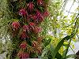

- A trópusi orchideák hajtásrendszere alapvetõen kétféle csoportra osztható.
- A hajtásnövekedése, kifejlõdése után leáll, a továbbnövekedést a késõbbiekben az egyik oldalrügy biztosítja (pl. csónakorchidea).
- Hajtása függõlegesen nõ és folyamatosan biztosítja a továbbnövekedést, míg a virágzati szárak a hajtás oldalrügyeibõl fejlõdnek (pl. pillekosbor).
- A gyökérzetük életmódjuktól függõen változatosan alakulhat. A talajlakó fajoké vastag, ritkás és törékeny; míg a fán élõké dúsak, vastagok, és szorosan az élõhelyül szolgáló fához tapadnak, végük zöld, jelezve hogy itt is folyik tápanyag-elõállítás. Felületüket egy speciális szivacsos réteg fedi, amely elõsegíti a tápanyagok és a víz felvételét a környezetbõl.
- A párologtatás csökkentése érdekében a magasban élõ orchideák levelei merevek, bõrnemûek, méretük kicsi, míg a talajon élõké puha és nagyméretû, mivel ott magasabb a páratartalom és több vízhez jutnak a növények.
